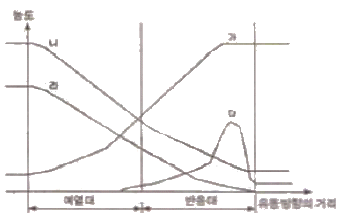
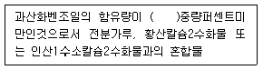
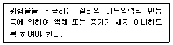
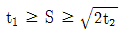
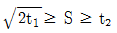
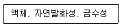
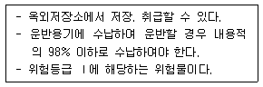

위험물기능장 (2013-04-14 기출문제)
1과목: 임의구분
1. 3.65kg의 염화수소 중에는 HCl 분자가 몇 개 있는가?
- 6.02×1023
- 6.02×1024
- 6.02×1025
- 6.02×1026
(정답률: 94%)

2. 다음 중 물과 접촉하여도 위험하지 않은 물질은?
- 과산화나트륨
- 과염소산나트륨
- 마그네슘
- 알킬알루미늄
(정답률: 72%)
3. 그림과 같은 예혼합화염 구조의 개략도에서 중간생성물의 농도 곡선은?

- 가
- 나
- 다
- 라
(정답률: 89%)
4. 다음 중 비중이 가장 작은 금속은?
- 마그네슘
- 알루미늄
- 지르코늄
- 아연
(정답률: 77%)
5. 위험물안전관리법령상 소화설비의 적응성에서 제6류 위험물을 저장 또는 취급하는 제조소등에 설치할 수 있는 소화설비는?
- 인산염류분말소화설비
- 탄산수소염류분말소화설비
- 이산화탄소소화설비
- 할로겐화합물소화설비
(정답률: 68%)
6. 수소화리튬의 위험성에 대한 설명 중 틀린 것은?
- 물과 실온에서 격렬히 반응하여 수소를 발생하므로 위험하다.
- 공기과 접촉하면 자연발화의 위험이 있다.
- 피부와 접촉시 화상의 위험이 있다.
- 고온으로 가열하면 수산화리튬과 수소를 발생하므로 위험하다.
(정답률: 77%)
7. 불연성가스 봉입장치를 설치해야 되는 위험물은?
- 아세트알데히드
- 이황화탄소
- 생석회
- 염소산나트륨
(정답률: 85%)
8. 위험물안전관리법령상 유기과산화물을 함유하는 것중에서 불활성고체를 함유하는 것으로서 다음에 해당하는 것은 위험물에서 제외된다. ( )안에 알맞은 수치는?

- 30
- 35.5
- 40.5
- 50
(정답률: 89%)
9. 소화난이도등급 I의 제조소등 중 옥내탱크저장소의 규모에 대한 설명이 옳은 것은?
- 액체 위험물을 저장하는 위험물의 액표면적이 20m2 이상인것
- 바닥면으로부터 탱크 옆판의 상단까지 높이가 6m 이상인 것(제6류 위험물을 저장하는 것 및 고인화점위험물만을 100℃미만의 온도에서 저장하는 것은 제외)
- 액체 위험물을 저장하는 단층 건축물 외의 건축물에 설치하는 것으로서 인화점이 40℃ 이상 70℃ 미만의 위험물은 지정수량의 40배 이상 저장 또는 취급하는 것
- 고체 위험물은 지정수량의 150배 이상 저장 또는 취급하는 것
(정답률: 73%)
10. 제조소등에서의 위험물 저장의 기준에 관한 설명 중 틀린 것은?
- 제3류 위험물 중 황린과 금수성물질은 동일한 저장소에서 저장하여도 된다.
- 옥내저장소에서 재해가 현저하게 증대할 우려가 있는 위험물을 다량 저장하는 경우에는 지정수량의 10배 이하마다 구분하여 상호간 0.3m 이상의 간격을 두어 저장하여 야 한다.
- 옥내저장소에서는 용기에 수납하여 저장하는 위험물의 온도가 55℃를 넘지 아니하도록 필요한 조치를 강구하여야 한다.
- 컨테이너식 이동탱크저장소외의 이동탱크저장소에 있어서는 위험물을 저장한 상태로 이동저장탱크를 옮겨 싣지 아니하여야 한다.
(정답률: 80%)
11. 과망간산칼륨의 일반적인 성상에 관한 설명으로 틀린것은?
- 단맛이 나는 무색의 결정성 분말이다.
- 산화제이고 황산과 접촉하면 격렬하게 반응한다.
- 비중은 약 2.7 이다.
- 살균제, 소독제로 사용된다.
(정답률: 67%)
12. 다음 물질과 제6류 위험물인 과산화수소와 혼합되었을 때 결과가 다른 하나는?
- 인산나트륨
- 이산화망간
- 요소
- 인산
(정답률: 72%)
13. 273℃에서 기체의 부피가 4L 이다. 같은 압력에서 25℃ 일 때의 부피는 약 몇 L 인가?
- 0.5
- 2.2
- 3
- 4
(정답률: 84%)
14. 다음 중 가연성이면서 폭발성이 있는 물질은?
- 과산화수소
- 과산화벤조일
- 염소산나트륨
- 과염소산칼륨
(정답률: 78%)
15. 나머지 셋과 지정수량이 다른 하나는?
- 칼슘
- 알킬알루미늄
- 칼륨
- 나트륨
(정답률: 84%)
16. 옥외탱크저장소에 설치하는 높이가 1m를 넘는 방유제 및 간막이둑의 안팎에 설치하는 계단 또는 경사로는 약 몇 m 마다 설치하여야 하는가?
- 20m
- 30m
- 40m
- 50m
(정답률: 87%)
17. 위험물안전관리법령상 이산화탄소소화기가 적응성이 없는 위험물은?
- 인화성고체
- 톨루엔
- 초산메틸
- 브롬산칼륨
(정답률: 64%)
18. 제3류 위험물의 종류에 따라 위험물을 수납한 용기에 부착하는 주의사항의 내용에 해당하지 않는 것은?
- 충격주의
- 화기엄금
- 공기접촉엄금
- 물기엄금
(정답률: 83%)
19. 황린과 적린에 대한 설명 중 틀린 것은?
- 적린은 황린에 비하여 안정하다.
- 비중은 황린이 크며, 녹는점은 적린이 낮다.
- 적린과 황린은 모두 물에 녹지 않는다.
- 연소할 때 황린과 적린은 모두 흰연기를 발생한다.
(정답률: 74%)
20. TNT가 분해될 때 발생하는 주요 가스에 해당하지 않는 것은?
- 질소
- 수소
- 암모니아
- 일산화탄소
(정답률: 82%)
2과목: 임의구분
21. 다음 중 서로 혼합하였을 경우 위험성이 가장 낮은 것은?
- 알루미늄분과 황화린
- 과산화나트륨과 마그네슘분
- 염소산나트륨과 황
- 니트로셀룰로오스와 에탄올
(정답률: 87%)
22. Al 이 속하는 금속은 무슨 족 계열인가?
- 철족
- 알칼리금속족
- 붕소족
- 알칼리토금속족
(정답률: 89%)
23. 오황화린의 성질에 대한 설명으로 옳은 것은?
- 청색의 결정으로 특이한 냄새가 있다.
- 알코올에는 잘 녹고 이황화탄소에는 잘 녹지 않는다.
- 수분을 흡수하면 분해한다.
- 비점은 약 325℃ 이다.
(정답률: 58%)
24. 아세톤을 저장하는 옥외저장탱크 중 압력탱크 외의 탱크에 설치하는 대기밸브 부착 통기관은 몇 kPa 이하의 압력차이로 작동할 수 있어야 하는가?
- 5
- 10
- 15
- 20
(정답률: 73%)
25. 위험물제조소에 옥내소화전 6개와 옥외소화전 1개를 설치하는 경우 각각에 필요한 최소 수원의 수량을 합한 값은? (단, 위험물제조소는 단층 건축물이다.)
- 7.8m3
- 13.5m3
- 21.3m3
- 52.5m3
(정답률: 82%)
26. 과산화마그네슘에 대한 설명으로 옳은 것은?
- 갈색분말로 시판품은 함량이 80 ~ 90% 정도이다.
- 물에 잘 녹지 않는다.
- 산에 녹아 산소를 발생한다.
- 소화방법은 냉각소화가 효과적이다.
(정답률: 49%)
27. 시료를 가스화시켜 분리관 속에 운반기체(carrier gas)와 같이 주입하고 분리관(컬럼)내에서 체류하는 시간의 차이에 따라 정성, 정량하는 기기분석은?
- FT-IR
- GC
- UV-vis
- XRD
(정답률: 85%)
28. 위험물안전관리법령상 지정수량이 100kg 이 아닌 것은?
- 적린
- 철분
- 유황
- 황화린
(정답률: 87%)
29. 산화성고체 위험물의 일반적인 성질로 옳은 것은?
- 불연성이며 다른 물질을 산화시킬 수 있는 산소를 많이 함유하고 있으며 강한 환원제이다.
- 가연성이며 다른 물질을 연소시킬 수 있는 염소를 함유하고 있으며 강한 산화제이다.
- 불연성이며 다른 물질을 산화시킬 수 있는 산소를 많이 함유하고 있으며 강한 산화제이다.
- 불연성이며 다른 물질을 연소시킬 수 있는 수소를 많이 함유하고 있으며 강한 환원성 물질이다.
(정답률: 88%)
30. 위험물의 취급 중 제조에 관한 30. 기준으로 다음 사항을 유의하여야 하는 공정은?

- 증류공정
- 추출공정
- 건조공정
- 분쇄공정
(정답률: 85%)
31. 니트로셀룰로오스에 대한 설명으로 옳지 않은 것은?
- 셀룰로오스를 진한 황산과 질산으로 반응시켜 만들 수 있다.
- 품명이 니트로화합물이다.
- 질화도가 낮은 것보다 높은 것이 더 위험하다.
- 수분을 함유하면 위험성이 감소된다.
(정답률: 77%)
32. 제3류 위험물에 대한 설명으로 옳지 않은 것은?
- 탄화알루미늄은 물과 반응하여 에탄가스를 발생한다.
- 칼륨은 물과 반응하여 발열반응을 일으키며 수소가스를 발생한다.
- 황린이 공기중에서 자연발화하여 오산화린이 발생된다.
- 탄화칼슘이 물과 반응하여 발생하는 가스의 연소범위는 2.5 ~ 81% 이다.
(정답률: 71%)
33. 위험물안전관리법상 제조소등에 대한 과징금처분에 관한 설명으로 옳은 것은?
- 제조소등의 관계인이 허가취소에 해당하는 위법행위를한 경우 허가취소가 이용자에게 심한 불편을 주거나 공익을 해칠 우려가 있는 경우 허가취소처분에 갈음하여 2억원 이하의 과징금을 부과할 수 있다.
- 제조소등의 관계인이 사용정지에 해당하는 위법행위를 한 경우 사용정지가 이용자에게 심한 불편을 주거나 공익을 해칠 우려가 있는 경우 사용정지처분에 갈음하여 2억원 이하의 과징금을 부과할 수 있다.
- 제조소등의 관계인이 허가취소에 해당하는 위법행위를 한 경우 허가취소가 이용자에게 심한 불편을 주거나 공익을 해칠 우려가 있는 경우 허가취소처분에 갈음하여 5억원 이하의 과징금을 부과할 수 있다.
- 제조소등의 관계인이 사용정지에 해당하는 위법행위를 한 경우 사용정지가 이용자에게 심한 불편을 주거나 공익을 해칠 우려가 있는 경우 사용정지처분에 갈음하여 5억원 이하의 과징금을 부과할 수 있다.
(정답률: 73%)
34. 특정옥외저장탱크 구조기준 중 필렛용접의 사이즈(S, mm)를 구하는 식으로 옳은 것은? (단, t1 : 얇은 쪽의 강판의 두께[mm] , t2 : 두꺼운 쪽의 강판의 두께[mm] 이며, S≧S4.5 이다.)
- t1≥S≥t2


- t1≥S≥2t2
(정답률: 88%)
35. 0.4N HCl 500mL 에 물을 가해 1L 로 하였을 때 pH 는 약 얼마인가?
- 0.7
- 1.2
- 1.8
- 2.1
(정답률: 61%)
36. 다음 금속원소 중 비점이 가장 높은 것은?
- 리튬
- 나트륨
- 칼륨
- 루비듐
(정답률: 89%)
37. 위험성 평가기법을 정량적 평가기법과 정성적 평가기법으로 구분 할 때 다음 중 그 성격이 다른 하나는?
- HAZOP
- FTA
- ETA
- CCA
(정답률: 91%)
38. 이동탱크저장소에 의하여 위험물 장거리 운송 시 다음 중 위험물운송자를 2명 이상의 운전자로 하여야 하는 경우는?
- 운송책임자를 동승시킨 경우
- 운송 위험물이 휘발유인 경우
- 운송 위험물이 질산인 경우
- 운송 중 2시간 이내마다 20분 이상씩 휴식하는 경우
(정답률: 80%)
39. 내용적이 2만L인 지하저장탱크(소화약제 방출구를 탱크안의 윗부분에 설치하지 않은 것)를 구입하여 설치하는 경우 최대 몇 L 까지 저장취급허가를 신청할 수 있는가?
- 18000L
- 19000L
- 19800L
- 20000L
(정답률: 79%)
40. 한변의 길이는 10m, 다른 한변의 길이는 50m 인 옥내저장소에 자동화재탐지설비를 설치하는 경우 경계구역은 원칙적으로 최소한 몇 개로 하여야 하는가? (단, 차동식스포트형감지기를 설치한다.)
- 1
- 2
- 3
- 4
(정답률: 88%)
3과목: 임의구분
41. 위험물안전관리법령상 품명이 나머지 셋과 다른 하나는? (단, 수용성과 비수용성은 고려하지 않는가)
- C6H5Cl
- C6H5NO2
- C2H4(OH)2
- C3H5(OH)3
(정답률: 57%)
42. 다음 중 위험물안전관리법령에서 규정하는 이중벽탱크의 종류가 아닌 것은?
- 강제강화플라스틱제 이중벽탱크
- 강화플라스틱제 이중벽탱크
- 강제 이중벽탱크
- 강화강판 이중벽탱크
(정답률: 73%)
43. 위험물안전관리자에 대한 설명으로 틀린 것은?
- 암반탱크저장소에는 위험물안전관리자를 선임하여야 한다.
- 위험물안전관리자가 일시적으로 직무를 수행할 수 없은 경우 대리자를 지정하여 그 직무를 대행하게 하여야 한다.
- 위험물안전관리자와 위험물운송자로 종사하는 자는 신규종사 후 2년마다 1회 실무교육을 받아야 한다.
- 다수의 제조소등을 동일인이 설치한 경우에는 일정한 요건에 따라 1인의 안전관리자를 중복하여 선임할 수 있다.
(정답률: 80%)
44. 위험물안전관리법령상 기계에 의하여 하역하는 구조로 된 운반용기 외부에 표시하여야 하는 사항이 아닌 것은? (단, 원칙적인 경우에 한하며, 국제해상위험물규칙(IMDG Code)를 표시한 경우는 제외한다.)
- 겹쳐쌓기시험하중
- 위험물의 화학명
- 위험물의 위험등급
- 위험물의 인화점
(정답률: 71%)
45. 삼산화크롬(Chromium trioxide)을 융점 이상으로 가열(250℃) 하였을 때 분해 생성물은?
- CrO2 와 O2
- Cr2O3 와 O2
- Cr 와 O2
- Cr2O5 와 O2
(정답률: 75%)
46. 과산화수소 수용액은 보관 중 서서히 분해할 수 있으므로 안정제를 첨가하는데 그 안정제로 가장 적합한 것은?
- H3PO4
- MnO2
- C2H5OH
- Cu
(정답률: 87%)
47. 주유취급소에 설치해야 하는 “주유중 엔진정지” 게시판의 색상을 옳게 나타낸 것은?
- 적색바탕에 백색문자
- 청색바탕에 백색문자
- 백색바탕에 흑색문자
- 황색바탕에 흑색문자
(정답률: 86%)
48. 클로로벤젠 150,000 리터는 몇 소요단위에 해당하는가?
- 7.5 단위
- 10 단위
- 15 단위
- 30 단위
(정답률: 85%)
49. [보기]의 성질을 모두 갖추고 있는 물질은?

- 트리에틸알루미늄
- 아세톤
- 황린
- 마그네슘
(정답률: 79%)
50. 다음 위험물 중 지정수량이 나머지 셋과 다른 것은?
- 요오드산염류
- 무기과산화물
- 알칼리토금속
- 염소산염류
(정답률: 71%)
51. 위험물제조소로부터 30m 이상의 안전거리를 유지하여야하는 건축물 또는 공작물은?
- 문화재보호법에 따른 지정문화재
- 고압가스안전관리법에 따라 신고하여야 하는 고압가스 저장시설
- 주거용 건축물
- 고등교육법에서 정하는 학교
(정답률: 88%)
52. 다음 중 과염소산의 화학적 성질에 관한 설명으로 잘못된 것은?
- 물에 잘 녹으며 수용액 상태는 비교적 안정하다.
- Fe, Cu, Zn 과 격렬하게 반응하고 산화물을 만든다.
- 알코올류와 접촉시 폭발 위험이 있다.
- 가열하면 분해하여 유독성의 HCl 이 발생한다.
(정답률: 53%)
53. 다음에서 설명하는 위험물의 지정수량으로 예상할 수 있는 것은?

- 10 킬로그램
- 300 킬로그램
- 400 리터
- 4000 리터
(정답률: 70%)
54. 탱크안전성능검사의 내용을 구분하는 것으로 틀린 것은?
- 기초. 지반검사
- 충수. 수압검사
- 용접부검사
- 배관검사
(정답률: 78%)
55. 검사의 분류 방법 중 검사가 행해지는 공정에 의한 분류에 속하는 것은?
- 관리 샘플링검사
- 로트별 샘플링검사
- 전수검사
- 출하검사
(정답률: 70%)
56. 다음 중 브레인스토밍(Brainstorming)과 가장 관계가 깊은 것은?
- 파레토도
- 히드토그램
- 회귀분석
- 특성요인도
(정답률: 92%)
57. 단계여유(slack)의 표시로 옳은 것은? (단, TE 는 가장 이른 예정일, TL 은 가장 늦은 예정일, TF 는 총 여유시간, FF 는 자유여유시간 이다.)
- TE - TL
- TL - TE
- FF - TF
- TE - TF
(정답률: 80%)
58. c관리도에서 k = 20 인 군의 총 부적합수 합계는 58 이었다. 이 관리도의 UCL, LCL 을 계산하면 약 얼마인가?
- UCL = 2.90, LCL = 고려하지 않음
- UCL = 5.90, LCL = 고려하지 않음
- UCL = 6.92, LCL = 고려하지 않음
- UCL = 8.01, LCL = 고려하지 않음
(정답률: 75%)
59. 테일러(F.W. Taylor)에 의해 처음 도입된 방법으로 작업시간을 직접 관측하여 표준시간을 설정하는 표준시간 설정기법은?
- PTS법
- 실적자료법
- 표준자료법
- 스톱워치법
(정답률: 69%)
60. 공정 중에 발생하는 모든 작업, 검사, 운반, 저장, 정체등이 도식화 된 것이며 또한 분석에 필요하다고 생각되는 소요시간, 운반거리 등의 정보가 기재된 것은?
- 작업분석 (Operation Analysis)
- 다중활동분석표 (Multiple Activity Chart)
- 사무공정분석 (Form Process Chart)
- 유통공정도 (flow Process Chart)
(정답률: 77%)